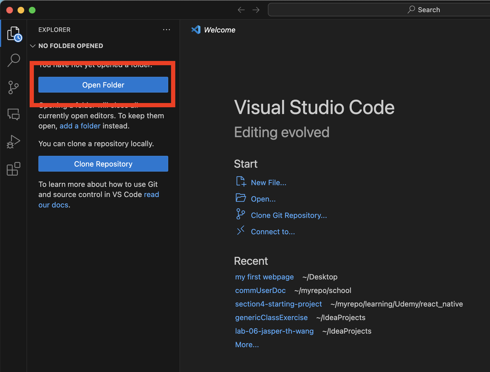
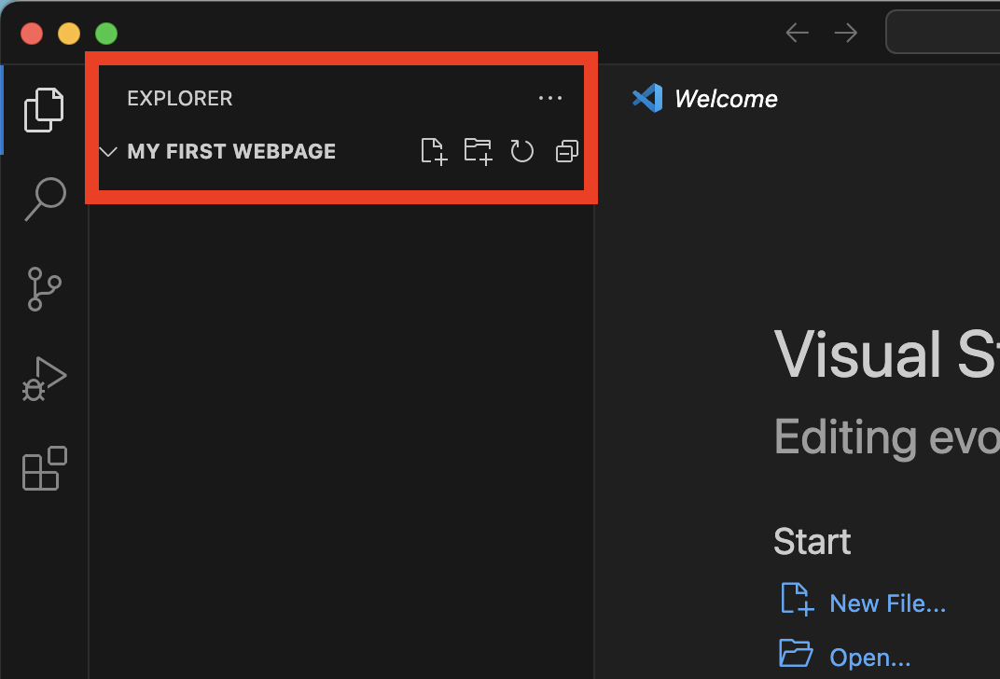
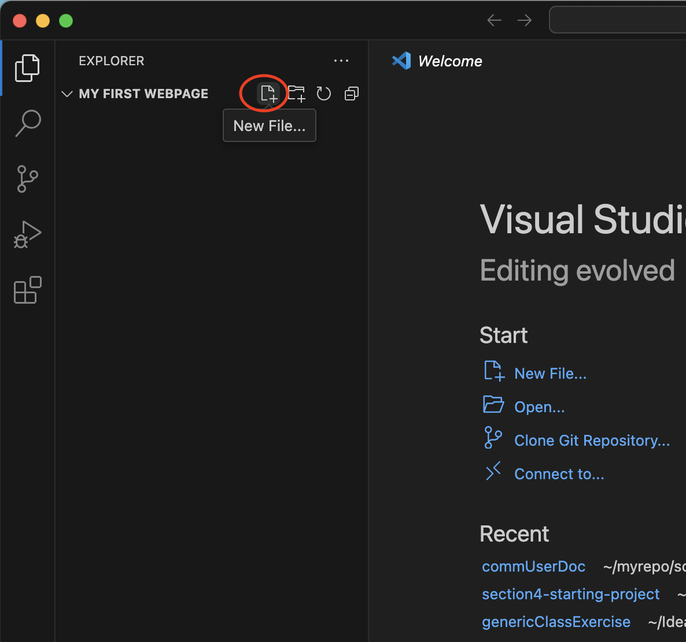
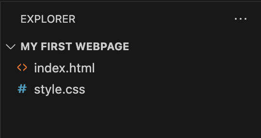
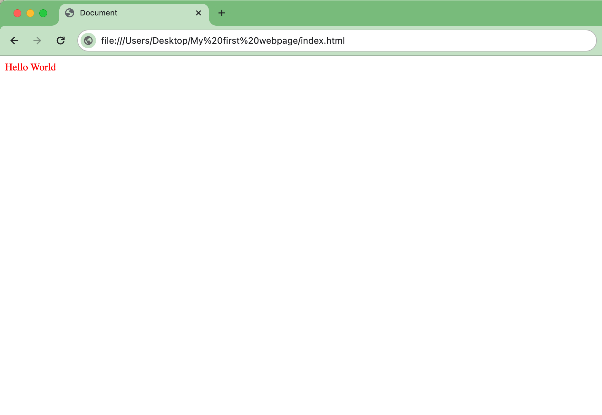

Setting up your webpage project¶
This section will show you how to set up a basic webpage project. You will make an HTML file to detail the basic structure of your webpage, and a CSS file to give your webpage style. You will then link your HTML and CSS files and verify that your CSS styles work by opening your web page using your web browser.
Setting up your project directory¶
Before we start writing the HTML and CSS code, it is important to set up an organized project structure as outlined below.
- Make a folder on your desktop titled “My first webpage”.
- Open VS Code.
-
Do any of the following to open your project in VS Code:
- In VS Code, click File > Open and find your “My first webpage” folder.
- In the VS Code Welcome page, select Open Folder on the left explorer panel. 
Success
You should see the title "MY FIRST WEBPAGE" on the explorer side panel. This means you have successfully open your folder as a project! - 
-
Click the New file button. 
- Name the new file
index.htmland hit enter. - Click the New file button again.
- Name the file
style.cssand hit enter. - You should now have a folder with two files in it.
Success
Here is what the project structure will look like.
And your explorer panel should look like this.

Linking your CSS file to your HTML file¶
Now, let's link your CSS file to your HTML file and write some CSS code to style your webpage.
-
In VS Code, open your
index.htmlfile.Basic Structure of a HTML Document
An HTML document consists of elements enclosed in tags, defining the structure and content of a webpage. It typically begins with a
<!DOCTYPE html>declaration followed by<html>,<head>, and<body>tags, where the<head>section contains metadata and the<body>section holds the visible content. -
Paste the following code snippet into the file.
Code Snippet
Metadata in HTML
In HTML, the header section contains important information about the document, such as its character encoding, viewport settings for responsive design, and the document's title. Additionally, it can include links to external resources like stylesheets using the tag. To read more about this, see What's in the head? Metadata in HTML.
-
Replace the '###' between the body tags with "Hello, world!"
The
<body>tag in HTMLThe body tag contains all of the visible content on a web page. Here, we're adding the classic 'Hello world' text so it can show up when you open the HTML file with a browser.
-
Open your folder and double-click on
index.htmlto open it in your browser. -
Below the
<title>tag, paste the following code snippets.The
<link>Tag in HTMLThe tag in HTML is used to link external resources, such as CSS stylesheets, to a document. Found in the
<head>section, it specifies the relationshiprel="stylesheet"and the pathhref="path/to/style.css"to the external file, facilitating the separation of content and style. -
In VS Code, Open your
style.cssfile and paste the following snippet. -
Refresh or reopen
index.htmlin your browser and verify that your hello world text is red.
Success
Nice job! Here is what your webpage should look like.

Your accomplishments so far¶
By completing this section, you have:
- Set up a project directory for your webpage.
- Created an HTML file with the basic structure of a webpage.
- Created a CSS file with a style rule to change the color of the text.
- Linked your CSS file to your HTML file.